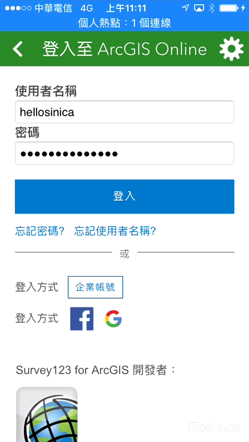
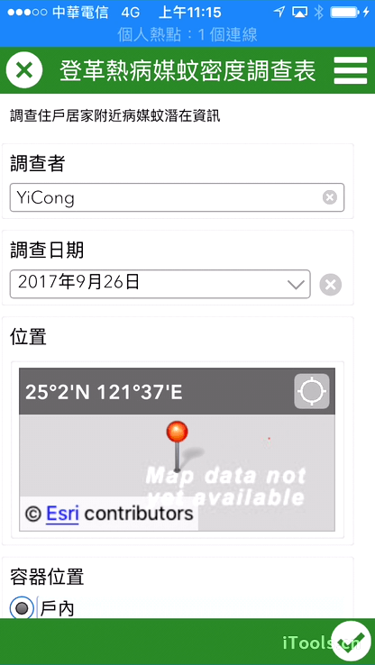
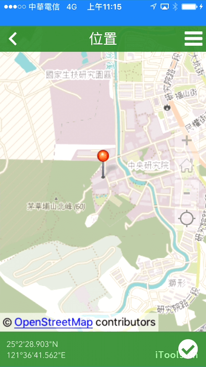
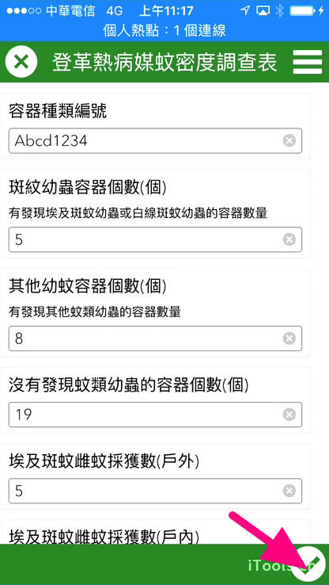
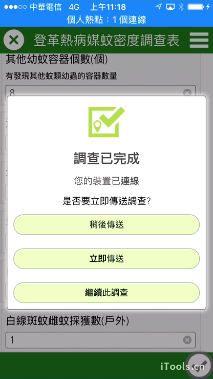
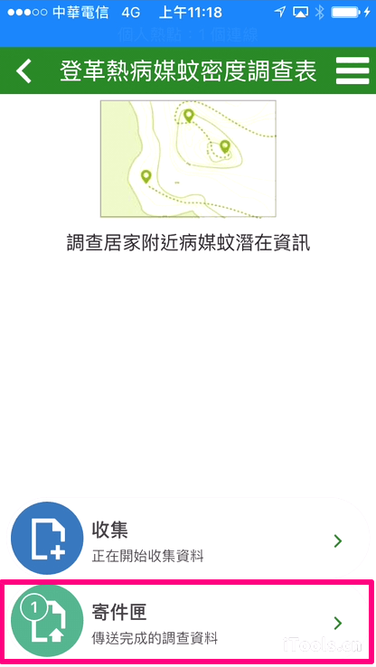
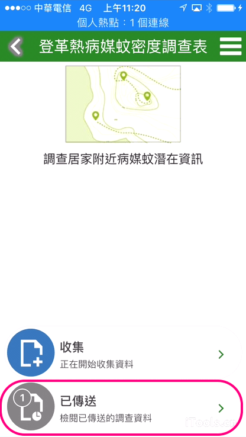

調查數據
問卷設計完畢後，調查人員須先在手持行動裝置中下載Suvey123 for ArcGIS
App，然後登入Survey123下載問卷調查表，即可進行調查工作。
以下使用iOS系統進行練習。
到App Store下載Survey123 for ArcGIS。Android系統可以到Google
Play下載。開啟Surver123，使用以下資訊登入
帳號：您的帳號
密碼：您的密碼 點選【取得調查】按鈕，然後按下載調查表，完成後點選【確定】
點選左上角按鈕回到我的調查表
點選【登革熱病媒蚊密度調查表】，然後按【收集】按鈕開始進行調查
依照問題，輸入對應的答案，蒐集完畢後，案右下角按鈕
   這邊會出現三個選項，說明如下：

如果上一步驟選擇稍後傳送，你可以點選寄件匣，找到稍早蒐集的數據，點選發送，將數據分享到ArcGIS Online上
稍後傳送 代表你蒐集的這一筆數據會暫時儲存在行動裝置中，等到有網路的時候，再把資料傳送到ArcGIS Online上，後續步驟，請見步驟8 立即傳送 直接將你蒐集的這一筆數據傳送到ArcGIS Online上 繼續此調查 修改正在蒐集的這一筆數據資料  全部的數據都已經發送到ArcGIS Online後，寄件匣會變成已傳送。
